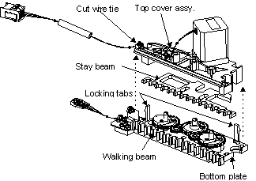
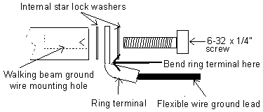
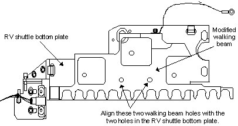
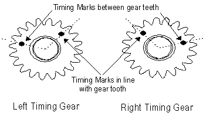
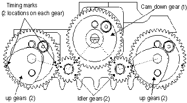
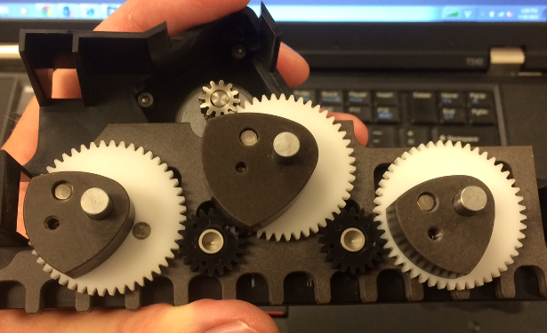

This procedure describes how to disassemble and reassemble the RV shuttle.
This procedure is performed in some extreme cases and is not a common practice.
Disassemble the RV Shuttle and replace the walking beam (lower part) or stay beam (upper part).
Remove the RV shuttle from the instrument and place on a clean flat work surface.
Caution: Use caution to avoid losing small parts and contaminating internal shuttle parts with dust or debris.
Remove the tie-wrap that attaches the RV shuttle motor wires to the index sensor mounting bracket.

Depress the top plate locking tab closest to the shuttle index sensor.
Pull up on the brown top cover until the locking tab releases and does not snap into the locked position.
Prevent the two parts from relatching by inserting a screwdriver between the top cover and bottom plate near the locking tab arm.
Depress the locking tab next to the drive motor, and lift the top plate while holding down on the lower plate.
Lift the top assembly (with the motor) up and away from the remaining assembly.
Lift the stay beam (brown plastic) up and away from the remainder of the shuttle.
Remove the three large and two small gears. To speed reassembly, try to keep the gears in the same relative positions they were in on the shuttle.
Remove the walking beam (black metal).
Assemble the RV shuttle.
If you are replacing the walking beam, assemble the flexible wire ground lead onto the walking beam as shown, then tighten it securely.

Place the grounded walking beam on the bottom plate, and line up the two holes in the walking beam with the two holes in the bottom plate. If alignment pins are available, insert them through the two holes of the walking beam and bottom plate.

Insert the two outer gears (cam up) into the two end cutouts in the walking beam with their shafts through the holes in the bottom plate.
Insert the center gear (cam down) into the center walking beam cutout with the gear shaft through the hole in the bottom plate.
Note: The two small gears have two timing locator marks; one at a point between two teeth and one at a point directly in line with a tooth. The two small idler gears must be installed with the timing marks oriented correctly and the correct sides facing up.

Align the between-teeth idler gear marks with the in-line-with-tooth gear marks on the up-cam gears.
Note: These parts are lubricated already. Do not apply grease unless the parts were dropped or became dirty and had to be cleaned.
Figure 17: Parts Drawing with Timing Marks

Figure 18: Assembled Image for Reference

Install the stay beam by placing the two elongated slots over the two alignment pin holes, and placing the two rectangular cutouts over the two outer gear cams.
If alignment pins were used, remove them.
Install the top plate over the two locking tab legs. If the top plate does not fit completely onto the remainder of the shuttle, reach into the motor gear area and rotate the gear with one finger until the teeth line up with the teeth of the shuttle gear.
Verify the mechanical operation of the RV shuttle.
Before installing the reassembled shuttle into the instrument, carefully rotate the shuttle with a flat blade screwdriver in the slotted gear shaft. Ensure that the shuttle moves freely in both directions and that both beams are nearly parallel to the shuttle top.
If either shuttle beam is not close to parallel with the top plate, disassemble the shuttle, and then reassemble and recheck it.
Check for clearance and free movement of the ring terminal and the walking beam grounding wire. While rotating the shuttle manually, ensure that the ring terminal and wire do not contact or catch on any other surfaces.
After the shuttle is assembled correctly, install the shuttle in the instrument. Use the original mounting screws in the right front and left rear locations, and an 8-32 x 5/8 inch screw in the right rear mounting screw location.
Correctly align, adjust, and secure the RV shuttle.